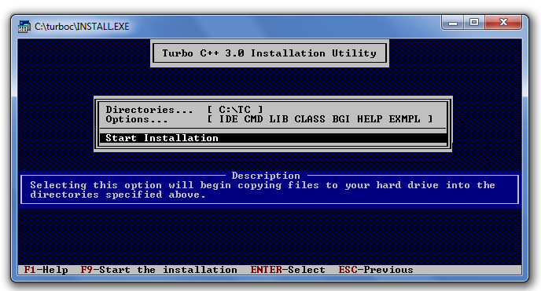

There are many compilers available for 'c' and 'c'++. You need to download any one. Here, we are going to use Turbo c++. It will work for both 'c' and c++. To install the Turbo 'c' software, you need to follow following steps.
Download Turbo c++
create turbo'c' directory inside 'c' drive and extract the tc3.zip inside c:\turboc
Double click on install.exe file
click on the tc application file located inside c:\Tc\BIN to write the 'c' program
You can download turbo c++ from many sites.
Now, you need to create a new directory turboc inside the c: drive. Now extract the tc3.zip file in c:\truboc directory.
Now, click on the install icon located inside the c:\turboc
It will ask you to install 'c' or not, press enter to install.
change your drive to 'c', press c.
Press enter, it will look inside the c:\turbo'c' directory for the required files.
Select Start installation by the down arrow key then press enter.

Now 'c' is installed, press enter to read documentation or close the software.
Now double click on the tc icon located in c:\Tc\BIN directory to write the 'c' program.
In windows 7 or window 8, it will show a dialog block to ignore and close the application because fullscreen mode is not supported. click on Ignore button.
Now it will showing following console.